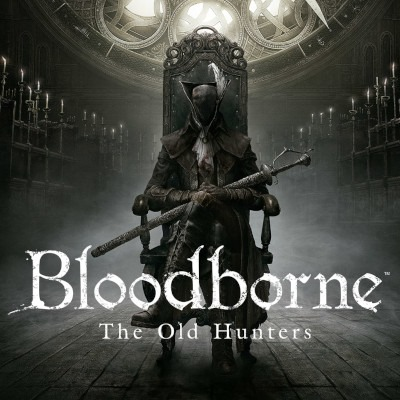

Fantasia obscura, ou "dark fantasy", é um subgênero da literatura e mídia que combina elementos da fantasia tradicional com temas sombrios, macabros e muitas vezes horripilantes. Diferente da fantasia convencional, que frequentemente apresenta cenários brilhantes e heróis destemidos, a dark fantasy explora o lado mais sombrio e sinistro do imaginário.
Os enredos de dark fantasy costumam envolver criaturas sobrenaturais, magia negra, ambientes sombrios e personagens moralmente ambíguos. Heróis podem ser anti-heróis, e os vilões muitas vezes têm nuances e motivações complexas. A atmosfera é densa, permeada por um senso de perigo iminente e um tom geralmente melancólico.
Este subgênero é comumente encontrado na literatura, filmes, jogos e outras formas de mídia, proporcionando aos consumidores uma experiência que desafia as expectativas tradicionais da fantasia ao explorar os aspectos mais sombrios e desconcertantes da imaginação humana. Exemplos populares incluem obras como "Game of Thrones", "The Witcher" e "Dark Souls".
Dark Souls é uma série de jogos de ação e RPG conhecida por sua jogabilidade desafiadora, atmosfera sombria e narrativa enigmática. Desenvolvido pela FromSoftware, os jogos colocam os jogadores em mundos interconectados repletos de inimigos mortais e chefes formidáveis. A dificuldade elevada, a falta de orientação explícita e a ênfase na exploração criam uma experiência única e gratificante. A ambientação melancólica, o design intrincado dos níveis e a narrativa minimalista contribuem para a reputação da série, cativando jogadores com uma mistura única de desafio, descoberta e imersão em um universo dark fantasy intrigante.

Bloodborne, desenvolvido pela FromSoftware, é um jogo de ação e RPG que mergulha os jogadores em um cenário de horror gótico. Ambientado na cidade de Yharnam, assolada por uma misteriosa praga, o jogo combina uma jogabilidade intensa com um enredo intrincado e sombrio. Os jogadores enfrentam criaturas grotescas e chefes desafiadores, enquanto desvendam segredos cósmicos e uma narrativa que mistura elementos de insanidade, sacrifício e descoberta. A atmosfera opressiva, o design de níveis intricado e o combate visceral contribuem para uma experiência única, consolidando Bloodborne como um título marcante no gênero de ação e horror.
"Berserk" é um mangá escrito e ilustrado por Kentaro Miura que se destaca por sua narrativa sombria e visceral. A história segue Guts, um mercenário marcado por uma marca demoníaca, enquanto ele enfrenta seres sobrenaturais e inimigos humanos em um mundo medieval sombrio e impiedoso. A trama aborda temas profundos, como a natureza da humanidade, a luta contra destinos cruéis e a busca por vingança. A obra é conhecida por suas cenas de ação intensas, complexidade psicológica dos personagens e pela exploração de um universo dark fantasy repleto de horrores. O mangá recebe elogios pela profundidade emocional e pela arte detalhada, tornando-se uma influência significativa no mundo dos quadrinhos e animação japonesa.